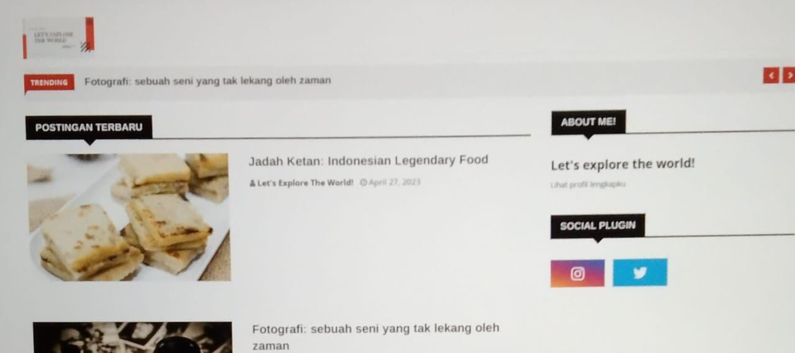

SMKN 2_Balikpapan
Home
More
Prestasi
Profil Penulis
Jurusan
Article
Contact Us
Sekali Lagi! Lavavela's Team" berhasil membuat gebrakan baru

"Tiada Hari Tanpa Prestasi"
, halo sobat prestasi.... Siapa sih yang tidak tau Lavavela's Team?? Salah satu team dari jurusan RPL (Rekayasa Perangkat Lunak) ini memang merupakan salah satu team IT terbaik sepanjang sejarah SMK Negeri 2 Balikpapan. Tim yang berangggotakan Alina Wijayanti, Dexan Putra Pratama, dan Arthur Samudra Asgara ini merupakan rekan tim yang selalu menjadi andalan jurusan RPL. Bukan Lavavela's Team namanya jika tidak memberikan kejutan yang membuat seluruh warga SMK Negeri 2 Balikpapan terpukau dengan temuan serta gebrakan baru yang mereka buat. Pada kesempatan kali ini Lavavela's Team membuat sebuah gebrakan baru dengan membuat website yang dapat membuat website/blog dengan mudah.
Tentu saja penemuan ini merupakan suatu gebrakan baru yang sangat luar biasa. Pak Suparman S.Pd selaku kepala sekolah SMK Negeri 2 Balikpapan menuturkan bahwa ia sangat takjub dan kagum dengan project baru yang telah diselesaikan oleh Lavavela's Team. "Saya sangat kagum dengan project terbaru dari LAvavela's Team. "Anak-anak hebat yang sangat kreatif dan selalu bisa membuat siapapun kagum dan takjub dengan ide genius nya" tutur Pak Suparman dalam wawancaranya.
Dengan dibimbing bapak Bambang Wicaksono S.Kom atau akrab disapa Pak Benk, Alina, Dexan dan Arthur berhasil membuat semua orang terpukau. Beliau menuturkan bahwa tidak ada kesulitan yang berarti pada saat mereka mengerjakan project ini. "Selama project ini berlangsung kami tidak menemukan kesulitan berarti. Karena Alina, Dexan, dan Arthur sudah sangat paham dengan jobdesk masing-masing maka selama pembuatan project ini mereka selalu mengedepankan komunikasi dalam setiap permasalahan yang mereka temui" ucapnya pada saat di wawancara.
Alina menuturkan bahwa kedua rekan nya yakni Dexan dan Arthur sangat membantunya setiap kali ia menemui kesulitan. "Dexan dan Arthur benar-benar membantu disaat saya sedang menemui atau mengalami kesulitan selama memngerjakan bagian saya. Mereka juga sangat pengertian dan perhatian. Mereka berdua merupakan rekan tim terbaik yang pernah saya temui. Great job untuk kita semua" tutur Alina dengan perasaan bangga kepada kedua temannya.
Dexan dan Arthur juga menuturkan bahwa mereka merasa beruntung bisa menjadi rekan team dari Alina, menurut mereka berdua Alina lah yang menjadi penengah disaat terjadi perbedaan pendapat dari keduanya. "Alina itu teman sekaligus penasehat yang baik untuk saya dan Dexan. Mungkin karena dia perempuan satu-satunya diantara kami berdua. Jadi kami berdua sangat menjaga Alina seperti saudara perempuan kami sendiri" tutur Arthur saat diwawancara.(AZH)